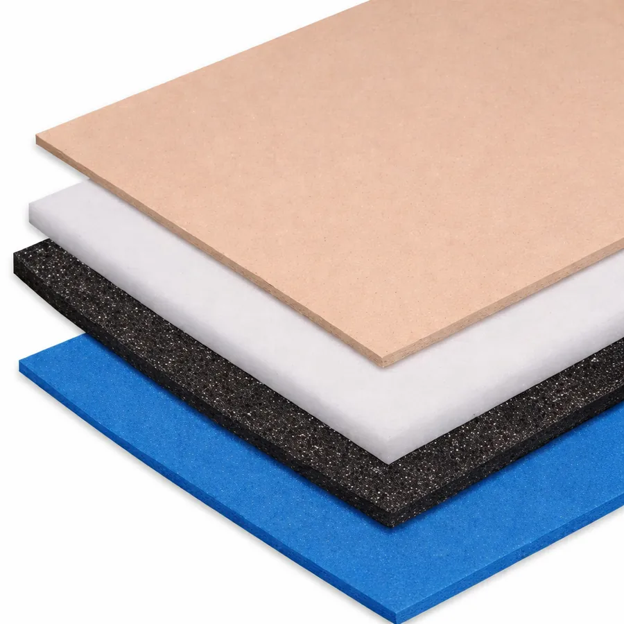

Traumatología · Kinesiología · Podología
Sumá el estudio de la pisada sin comprar el equipo.
Entregamos el podógrafo digital en comodato en tu consultorio. Vos hacés el estudio durante la consulta y nos derivás la fabricación de la plantilla. El paciente no sale de tu consultorio y vos no inmovilizás capital en un equipo.
- Sin costo de equipoel podógrafo es nuestro
- Fabricación propiano tercerizamos la plantilla
- Plastazoterepresentantes en Argentina
Representantes de Plastazote en Argentina
Consultas de profesionales: 11 6638-4242, lunes a viernes de 9 a 17 h
Qué es el comodato
El equipo queda en tu consultorio. No lo comprás.
El comodato es un préstamo de uso: nosotros seguimos siendo dueños del podógrafo digital y vos lo usás en tu consultorio sin pagar por el equipo. Lo que nos devolvés no es dinero por la máquina: es la derivación de la fabricación de las plantillas.
Qué ponemos nosotros
- El podógrafo digital, instalado en tu consultorio.
- La capacitación para que vos o tu equipo lo usen.
- El soporte del equipo mientras esté con vos.
- La fabricación de la plantilla, con materiales de uso ortopédico.
- Plastazote, del que somos representantes en Argentina.
Qué ponés vos
- El espacio en el consultorio y la indicación clínica.
- El estudio al paciente, durante la consulta.
- El envío del registro y la indicación para fabricar.
- La derivación de la fabricación a nosotros.
- El seguimiento del paciente, que sigue siendo tuyo.
Las condiciones concretas del comodato (plazo, volumen mínimo si lo hubiera y responsabilidad por el equipo) están pendientes de definir con Fernando y se pactan por escrito antes de instalar.
Qué gana tu consultorio
Un servicio más, sin inversión en equipamiento.
Sabemos que el problema de muchos consultorios no es clínico sino de difusión: el equipo está, pero el paciente no sabe que ahí puede hacerse el estudio. Por eso el listado de la red y el material para que lo comuniques son parte del acuerdo.
El circuito
Del estudio a la plantilla entregada.
- 1
Hacés el estudio
Con el podógrafo, en tu consultorio y durante la consulta. El estudio no es invasivo.
- 2
Nos enviás los datos
El registro de presión y tu indicación: qué buscás corregir o descargar en ese pie.
- 3
Fabricamos
Diseñamos la plantilla sobre ese registro y la producimos con los materiales que corresponden a cada zona.
- 4
Se entrega
La plantilla llega para que se la entregues al paciente y hagas el control.
Plazos de fabricación, forma de envío y esquema de precios pendientes de confirmar.

El respaldo
Representantes de Plastazote en Argentina.
Plastazote es la espuma de polietileno termomoldeable que se usa como referencia en plantillas ortopédicas. No la compramos a un intermediario: somos representantes de la marca en el país, y eso es lo que nos permite fabricar con ese material de forma estable.
- Fabricación propia. La plantilla no se terceriza: se produce acá.
- Materiales de uso ortopédico. Plastazote, caucho EVA, nanogel y poliform, según lo que necesite cada zona del pie.
- Criterio clínico respaldado. El diseño se apoya en la mirada de un cirujano traumatólogo.
Años de trayectoria en el rubro y cantidad de profesionales en la red pendientes de confirmar con Fernando.
Pedir información
¿Querés el equipo en tu consultorio?
Dejanos tus datos y te contamos las condiciones del comodato. Si preferís, escribinos directo por WhatsApp.
- WhatsApp11 6638-4242
- HorarioLunes a viernes, 9 a 17 h
- ClínicaHaedo, Buenos Aires
Este formulario es solo para profesionales de la salud. Si sos paciente, mirá dónde hacerte el estudio.